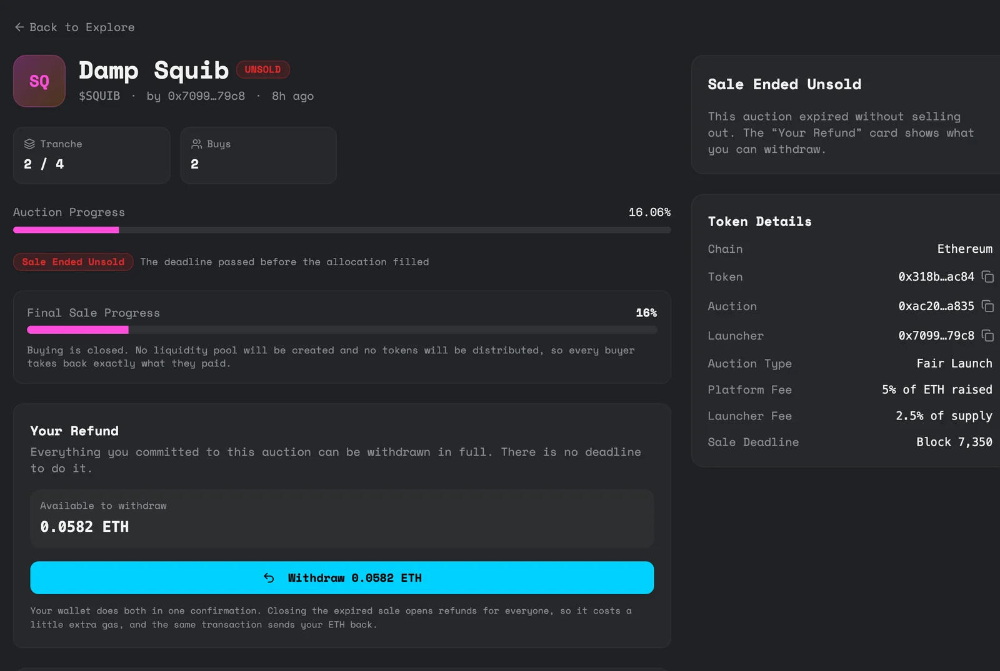
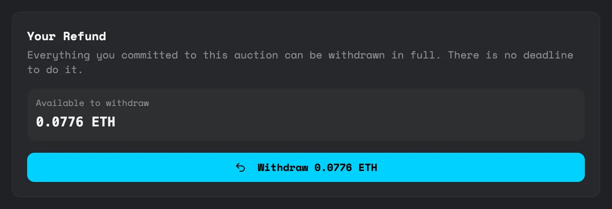

When a sale doesn't sell out
A sale that doesn't sell out isn't left hanging. Every sale has a deadline, and after it everyone gets their money back in full.
The deadline
Every sale has one, set by the launcher at launch between 1 and 30 days. You can see the time left on the sale page. Buying stops when it passes.
Getting your ETH back

Open the sale and press Withdraw on the Your Refund card. You get back exactly what you paid. Not a share, not minus a fee: the same amount. There's no deadline to withdraw, so there's no rush.
Before anyone has withdrawn, the sale shows as UNSOLD. The first person to withdraw also closes the sale for everyone. Your wallet does both in one confirmation, which costs a little extra gas. After that the sale shows as EXPIRED and everyone else just withdraws.

Your Profile page also lists anything you can withdraw, so you don't have to remember which sales you were in.
What happens to the tokens
No trading pool is created, no fees are taken, and no tokens go to buyers. The unsold supply can be taken back by the launcher's wallet. There's no button for that in the app yet.
The refund path only exists for sales that miss their deadline. As soon as a sale sells out, the ETH goes into the pool and your tokens are there to claim.